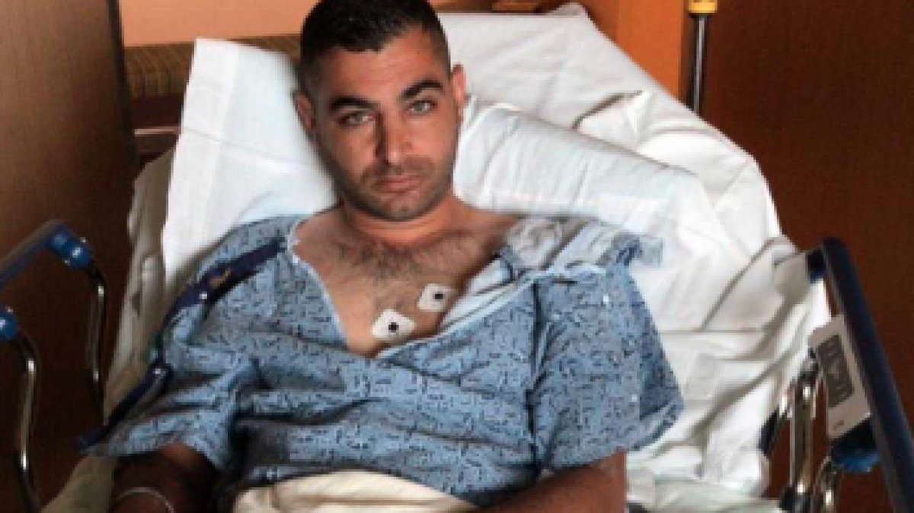

'Martyrdom, bro:' Muslim army vet busted in large-scale domestic terror plot...
Targeted Jews, Christians, military bases, white nationalists for Christchurch 'retribution'...
8-year-old 'hero' saves sister from moving car as man tried to kidnap them
DEPUTY AG ROD ROSENSTEIN RESIGNS
Harvest Bible Chapel will seek reimbursement from James MacDonald for ‘personal expenses’
Trump blasts 'Sleepy Joe' he hits 2020 trail...
Rabbi says gun 'miraculously jammed' during California synagogue attack
COMBAT VET RUSHED SHOOTER, CHASED HIM TO CAR... [language]

Hero Took Bullet Saving Kids...
Authorities look at synagogue suspect's social media posts...
Gay US Ambassador: VP Pence Is ‘on Board’ With Decriminalizing Homosexuality Worldwide
Trump says US sending immigrants to sanctuary cities: 'That was my sick idea'
NY Times apologizes for shocking cartoon depicting anti-Semitic tropes
Trump on collision course with McConnell on spending...
Whales trained by Russia's military may be harassing fishermen from NATO ally Norway 🤨
Ahead of 'The Irishman,' Scorsese and De Niro look back...
Obesity significantly increases risk of serious disease and early death, warn researchers
Planned Parenthood + Black Lives Matter + National Domestic Workers Alliance...
Kamala calls for ban of 'right to work' laws...
Mysterious Quebec hamburglar strikes again, racks up $2,000 in meals using customer's McDonald's app

Update: Authorities To Arrest Canadian Father If He Refers To Trans Child As Her Real Sex
'One last chance before it's too late': Beto rolls out $5 TRILLION climate change plan...
Even Worse Than the Green New Deal?
Top Chicago prosecutor Kim Foxx subpoenaed over handling of Jussie Smollett case
U.S. measles cases top 700 as officials urge vaccinations
'Avengers: Endgame' smashes global box office records with $1.2 BILLION debut...
Man shouting spoilers at theater gets beating from furious fans
Catholic Church in Sri Lanka urges more vigorous crackdown on Islamic militants...
Emergency law bans face coverings
GOP ready to step up Trump campaign spying case...
Michael Avenatti pleads not guilty in federal wire, bank fraud case
Boeing waited until after Lion Air crash to tell Southwest safety alert was turned off on 737 Max
AOC accuses Kellyanne Conway of trying to 'stoke suspicion' about her 'Christianity + faith life'
Alleged spy under investigation for killing Jamal Khashoggi found dead in prison
Google 'Systematically Retaliated' Against Employees Who Criticized Company...
Burger King is rolling out meatless 'Impossible Whoppers' nationwide
Will strong economy, dubious Democrats re-elect Trump?
First They Came for Plastic Bags -- Coffee Cups Are Next...
Whitey Bulger's prison warden: 'I think he wanted to die'
FanDuel, DraftKings want to make gambling legally from your phone a $150B industry...
Blame my brain: A killer's bold defense gets a court hearing...
Oliver North out as NRA president after leadership dispute...
Stolen 400-year-old Bible from Pittsburgh's Carnegie Library recovered in Netherlands
© 2019 Christian Daily Reporter | Editor: Adam Ford
CDR Comics | CDR Talks | CDRticles | Manifesto
100% reader-funded: Support CDR!